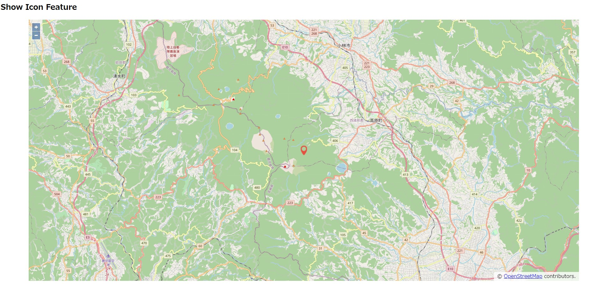

OpenLayersでアイコン（ポイント）を地図上に表示する
ライブラリ参照
- OpenLayers の js ライブラリとスタイルシートを参照します。
<link rel="stylesheet" href="https://cdn.jsdelivr.net/gh/openlayers/openlayers.github.io@master/en/v6.4.3/css/ol.css" type="text/css">
<script src="https://cdn.jsdelivr.net/gh/openlayers/openlayers.github.io@master/en/v6.4.3/build/ol.js"></script>
画面
- 地図を描画する要素を用意します。
<div id="map"></div>
スクリプト
- ポイントフィーチャを作成します。
- アイコン用のスタイルを定義し，フィーチャのスタイルとして割り当てます。
var center = [130.93, 31.9];
function addIconFeature() {
var iconStyle = new ol.style.Style({
image: new ol.style.Icon({
src: 'icon.png'
})
});
var vectorLayer = new ol.layer.Vector({
source: new ol.source.Vector(),
style: iconStyle
});
var f = new ol.Feature(new ol.geom.Point(ol.proj.transform(center, 'EPSG:4326', 'EPSG:3857')));
f.setStyle(iconStyle);
vectorLayer.getSource().addFeature(f);
map.addLayer(vectorLayer);
}
成果物

下記ソースコードを html ファイルとして保存し，Webブラウザで表示します。
<!doctype html>
<html lang="en">
<head>
<link rel="stylesheet" href="https://cdn.jsdelivr.net/gh/openlayers/openlayers.github.io@master/en/v6.4.3/css/ol.css"
type="text/css">
<style>
.map {
height: 85vh;
width: 90vw;
margin: auto;
}
</style>
<script src="https://cdn.jsdelivr.net/gh/openlayers/openlayers.github.io@master/en/v6.4.3/build/ol.js"></script>
<script src="https://code.jquery.com/jquery-3.5.1.min.js"></script>
<script type="text/javascript">
var center = [130.93, 31.9];
var map;
$(function () {
initializeMap();
addIconFeature();
});
function initializeMap() {
const baseMap = new ol.layer.Tile({
source: new ol.source.OSM()
});
map = new ol.Map({
target: 'map',
layers: [baseMap],
view: new ol.View({
center: ol.proj.fromLonLat(center),
zoom: 12
})
});
}
function addIconFeature() {
var iconStyle = new ol.style.Style({
image: new ol.style.Icon({
src: 'icon.png'
})
});
var vectorLayer = new ol.layer.Vector({
source: new ol.source.Vector(),
style: iconStyle
});
var f = new ol.Feature(new ol.geom.Point(ol.proj.transform(center, 'EPSG:4326', 'EPSG:3857')));
f.setStyle(iconStyle);
vectorLayer.getSource().addFeature(f);
map.addLayer(vectorLayer);
}
</script>
<title>Show Icon Feature</title>
</head>
<body>
<h2>Show Icon Feature</h2>
<div id="map" class="map"></div>
</body>
</html>